<!DOCTYPE html>
<html>
<head>
    <meta http-equiv="Content-type" content="text/html; charset=windows-1250">
    <title>Rozšířená realita</title>
    <script src="https://aframe.io/releases/1.0.4/aframe.min.js"></script>
    <script src="https://unpkg.com/aframe-look-at-component@0.8.0/dist/aframe-look-at-component.min.js"></script>
    <script src='../../../build/aframe-ar-nft.js'></script>
     <script src="https://raw.githack.com/jeromeetienne/AR.js/master/aframe/build/aframe-ar.min.js"></script>
    <script src="https://raw.githack.com/donmccurdy/aframe-extras/master/dist/aframe-extras.loaders.min.js"></script>
    <script>
        THREEx.ArToolkitContext.baseURL = 'https://raw.githack.com/jeromeetienne/ar.js/master/three.js/'
    </script>
</head>
    <script src="script.js"></script>
    <link rel="stylesheet" type="text/css" href="index.css"/>
<link rel="stylesheet" href="w3.css">  
<link rel="stylesheet" href="https://www.w3schools.com/lib/w3-theme-blue-grey.css">
<link rel='stylesheet' href='https://fonts.googleapis.com/css?family=Open+Sans'>
<link rel="stylesheet" href="https://cdnjs.cloudflare.com/ajax/libs/font-awesome/4.7.0/css/font-awesome.min.css">
<link rel="stylesheet" href="styl.css">     


<body style='margin: 0; overflow: hidden;'>
        <div class="centered instructions">                                                                                      
              <a href="ar_navod.html" class="w3-bar-item w3-button w3-green"><i class="fa fa-arrow-left"></i></a>     <br>
           <!--    <a href="ar_navod.html" class="w3-button w3-green w3-right"><i class="fa fa-question-circle-o"></i></a>        -->
         </div>
    <a-scene
    cursor='rayOrigin: mouse; fuse: true; fuseTimeout: 0;'
        raycaster="objects: [gps-entity-place];"
        vr-mode-ui="enabled: false"
		embedded
		arjs='sourceType: webcam; sourceWidth:1280; sourceHeight:960; displayWidth: 1280; displayHeight: 960; debugUIEnabled: false;'>
    
      <!--    BODY   -->
      <a-image src="hora5.png" look-at="[gps-camera]" scale="20 20 20" gps-entity-place="longitude: 18.019807; latitude: 49.586133;"></a-image>
         <a-text value="Zahr. blizko" align='center' baseline="top" z-offset="0.1" transparent="false" look-at="[gps-camera]" scale="20 20 20"
            gps-entity-place="longitude: 18.019807; latitude: 49.586133;"></a-text>
    
      <a-image src="hora5.png" look-at="[gps-camera]" scale="20 20 20" gps-entity-place="longitude: 18.0198125; latitude: 49.5864494;"></a-image>
         <a-text value="Třrešseňn" align='center' baseline="top" transparent="false" z-offset="0.1" look-at="[gps-camera]" scale="20 20 20"
            gps-entity-place="longitude: 18.0198125; latitude: 49.5864494;"></a-text>
    
     <a-image src="hora5.png" look-at="[gps-camera]" scale="20 20 20" gps-entity-place="latitude: 49.5863139; longitude: 18.0192706;"></a-image>
         <a-text value="Bouda, altáan" align='center' baseline="top" transparent="false" z-offset="0.1" look-at="[gps-camera]" scale="20 20 20"
            gps-entity-place="latitude: 49.5863139; longitude: 18.0192706;"></a-text>
    
     <a-image src="hora5.png" look-at="[gps-camera]" scale="20 20 20" gps-entity-place="latitude: 49.5858269; longitude: 18.0192653;"></a-image>
         <a-text value="Zahr. nahořre" align='center' baseline="top" transparent="false" z-offset="0.1" look-at="[gps-camera]" scale="20 20 20"
            gps-entity-place="latitude: 49.5858269; longitude: 18.0192653;"></a-text>
    
      <a-image src="hora5.png" look-at="[gps-camera]" scale="20 20 20" gps-entity-place="latitude: 49.5860008; longitude: 18.0185411;"></a-image>
         <a-text value="Toman" align='center' baseline="top" transparent="false" z-offset="0.1" look-at="[gps-camera]" scale="20 20 20"
            gps-entity-place="latitude: 49.5860008; longitude: 18.0185411;"></a-text>
            
      <a-image src="hora5.png" look-at="[gps-camera]" scale="20 20 20" gps-entity-place="latitude: 49.5865225; longitude: 18.0186375;"></a-image>
         <a-text value="Hřrišstěe" align='center' baseline="top" transparent="false" z-offset="0.1" look-at="[gps-camera]" scale="20 20 20"
            gps-entity-place="latitude: 49.5865225; longitude: 18.0186375;"></a-text> 
            
       <a-image src="hora5.png" look-at="[gps-camera]" scale="20 20 20" gps-entity-place="latitude: 49.5868422; longitude: 18.0190131;"></a-image>
         <a-text value="Pod hřrišstem" align='center' baseline="top" transparent="false" z-offset="0.1" look-at="[gps-camera]" scale="20 20 20"
            gps-entity-place="latitude: 49.5868422; longitude: 18.0190131;"></a-text>
            
     <a-image src="hora5.png" look-at="[gps-camera]" scale="20 20 20" gps-entity-place="latitude: 49.5869436; longitude: 18.0196731;"></a-image>
         <a-text value="Vila" align='center' baseline="top" transparent="false" z-offset="0.1" look-at="[gps-camera]" scale="20 20 20"
            gps-entity-place="latitude: 49.5869436; longitude: 18.0196731;"></a-text>                    
            
       <a-image src="hora5.png" look-at="[gps-camera]" scale="20 20 20" gps-entity-place="latitude: 49.5868383; longitude: 18.0201697;"></a-image>
         <a-text value="Popelnice" align='center' baseline="top" color="red" transparent="false" z-offset="0.1" look-at="[gps-camera]" scale="20 20 20"
            gps-entity-place="latitude: 49.5868383; longitude: 18.0201697;"></a-text>       
            
       <a-image src="hora5.png" look-at="[gps-camera]" scale="20 20 20" gps-entity-place="latitude: 49.5859517; longitude: 18.0205311;"></a-image>
         <a-text value="Daleko v zahradkach" align='center' baseline="top" transparent="false" z-offset="0.1" look-at="[gps-camera]" scale="20 20 20"
            gps-entity-place="latitude: 49.5859517; longitude: 18.0205311;"></a-text>
    
      <a-image src="hora5.png" look-at="[gps-camera]" scale="20 20 20" gps-entity-place="latitude: 49.5852525; longitude: 18.0184772;"></a-image>
         <a-text value="Sluneč<br>cni hodiny" align='center' baseline="top" z-offset="0.1" look-at="[gps-camera]" scale="20 20 20"
            gps-entity-place="latitude: 49.5852525; longitude: 18.0184772;"></a-text>
            
       <a-image src="hora5.png" look-at="[gps-camera]" scale="40 40 40" gps-entity-place="latitude: 49.5791933; longitude: 18.0300978;"></a-image>
         <a-text value="Zilinsky kopec" align='center' baseline="top" z-offset="0.1" look-at="[gps-camera]" scale="20 20 20"
            gps-entity-place="latitude: 49.5791933; longitude: 18.0300978;"></a-text>  
    
    
      <!--  <a-text value="Mnich" align='center' look-at="[gps-camera]" scale="10 10 10"
            gps-entity-place="latitude: 49.5863139; longitude: 18.0192706;"></a-text>
                  <a-entity image="src:hora.png; title:Mnich" look-at="[gps-camera]" scale="3 3 3" gps-entity-place="latitude: 49.5863139; longitude: 18.0192706"></a-entity>   
        <a-image src="hora.png" look-at="[gps-camera]" scale="3 3 3" gps-entity-place="latitude: 49.5863139; longitude: 18.0192706"></a-image>  
        <a-link href="http://www.example.com/" title="Mnich" image="#hora" look-at="[gps-camera]" scale="10 10 10" gps-entity-place="latitude: 49.5863139; longitude: 18.0192706"></a-link> 
         
          <a-assets>
    
        </a-assets>
         -->
         
          <!--    PRACHOVKY   -->
     <a-image src="hora3.png" look-at="[gps-camera]" scale="10 20 20" gps-entity-place="latitude: 50.4668056; longitude: 15.2856944;"></a-image>
         <a-text value="Zub" align='center' baseline="top" z-offset="0.1" look-at="[gps-camera]" scale="20 20 20"
            gps-entity-place="latitude: 50.4668056; longitude: 15.2856944;"></a-text>
    
     <a-image src="hora3.png" look-at="[gps-camera]" scale="10 20 20" gps-entity-place="latitude: 50.4668889; longitude: 15.2859167;"></a-image>
         <a-text value="Kreslo" align='center' baseline="top" z-offset="0.1" look-at="[gps-camera]" scale="20 20 20"
            gps-entity-place="latitude: 50.4668889; longitude: 15.2859167;"></a-text>
    
      <a-image src="hora3.png" look-at="[gps-camera]" scale="10 20 20" gps-entity-place="latitude: 50.4668333; longitude: 15.2868889;"></a-image>
         <a-text value="Pecirkova vez" align='center' baseline="top" z-offset="0.1" look-at="[gps-camera]" scale="20 20 20"
            gps-entity-place="latitude: 50.4668333; longitude: 15.2868889;"></a-text>
            
      <a-image src="hora3.png" look-at="[gps-camera]" scale="10 20 20" gps-entity-place="latitude: 50.4667500; longitude: 15.2870000;"></a-image>
         <a-text value="Palcat" align='center' baseline="top" z-offset="0.1" look-at="[gps-camera]" scale="20 20 20"
            gps-entity-place="latitude: 50.4667500; longitude: 15.2870000;"></a-text> 
            
       <a-image src="hora3.png" look-at="[gps-camera]" scale="10 20 20" gps-entity-place="latitude: 50.4667500; longitude: 15.2871944;"></a-image>
         <a-text value="Zelena vez" align='center' baseline="top" z-offset="0.1" look-at="[gps-camera]" scale="20 20 20"
            gps-entity-place="latitude: 50.4667500; longitude: 15.2871944;"></a-text>
            
     <a-image src="hora3.png" look-at="[gps-camera]" scale="10 20 20" gps-entity-place="latitude: 50.4666667; longitude: 15.2870833;"></a-image>
         <a-text value="Termitiste J vez" align='center' baseline="top" z-offset="0.1" look-at="[gps-camera]" scale="20 20 20"
            gps-entity-place="latitude: 50.4666667; longitude: 15.2870833;"></a-text>                    
            
       <a-image src="hora3.png" look-at="[gps-camera]" scale="10 20 20" gps-entity-place="latitude: 50.4666944; longitude: 15.2871667;"></a-image>
         <a-text value="Termitiste S vez" align='center' baseline="top" z-offset="0.1" look-at="[gps-camera]" scale="20 20 20"
            gps-entity-place="latitude: 50.4666944; longitude: 15.2871667;"></a-text>       
            
       <a-image src="hora3.png" look-at="[gps-camera]" scale="10 20 20" gps-entity-place="latitude: 50.4663611; longitude: 15.2887778;"></a-image>
         <a-text value="Okrajova vez" align='center' baseline="top" z-offset="0.1" look-at="[gps-camera]" scale="20 20 20"
            gps-entity-place="latitude: 50.4663611; longitude: 15.2887778;"></a-text>
    
      <a-image src="hora3.png" look-at="[gps-camera]" scale="10 20 20" gps-entity-place="latitude: 50.4673333; longitude: 15.2870278;"></a-image>
         <a-text value="Bertova vez Z" align='center' baseline="top" z-offset="0.1" look-at="[gps-camera]" scale="20 20 20"
            gps-entity-place="latitude: 50.4673333; longitude: 15.2870278;"></a-text>
            
       <a-image src="hora3.png" look-at="[gps-camera]" scale="10 20 20" gps-entity-place="latitude: 50.4673056; longitude: 15.2871667;"></a-image>
         <a-text value="Bertova vez V" align='center' baseline="top" z-offset="0.1" look-at="[gps-camera]" scale="20 20 20"
            gps-entity-place="latitude: 50.4673056; longitude: 15.2871667;"></a-text> 
            
     <a-image src="hora3.png" look-at="[gps-camera]" scale="10 20 20" gps-entity-place="latitude: 50.4673333; longitude: 15.2872222;"></a-image>
         <a-text value="Bertova vez S" align='center' baseline="top" z-offset="0.1" look-at="[gps-camera]" scale="20 20 20"
            gps-entity-place="latitude: 50.4673333; longitude: 15.2872222;"></a-text>
            
       <a-image src="hora3.png" look-at="[gps-camera]" scale="10 20 20" gps-entity-place="latitude: 50.4670833; longitude: 15.2874722;"></a-image>
         <a-text value="Strazni vez" align='center' baseline="top" z-offset="0.1" look-at="[gps-camera]" scale="20 20 20"
            gps-entity-place="latitude: 50.4670833; longitude: 15.2874722;"></a-text> 
            
     <a-image src="hora3.png" look-at="[gps-camera]" scale="10 20 20" gps-entity-place="latitude: 50.4670278; longitude: 15.2876944;"></a-image>
         <a-text value="Franova vez" align='center' baseline="top" z-offset="0.1" look-at="[gps-camera]" scale="20 20 20"
            gps-entity-place="latitude: 50.4670278; longitude: 15.2876944;"></a-text>
            
       <a-image src="hora3.png" look-at="[gps-camera]" scale="10 20 20" gps-entity-place="latitude: 50.4669161; longitude: 15.2878994;"></a-image>
         <a-text value="Pelisek" align='center' baseline="top" z-offset="0.1" look-at="[gps-camera]" scale="20 20 20"
            gps-entity-place="latitude: 50.4669161; longitude: 15.2878994;"></a-text>                
 
     <a-image src="hora3.png" look-at="[gps-camera]" scale="10 20 20" gps-entity-place="latitude: 50.4669444; longitude: 15.2880000;"></a-image>
         <a-text value="Rektorka Z vez" align='center' baseline="top" z-offset="0.1" look-at="[gps-camera]" scale="20 20 20"
            gps-entity-place="latitude: 50.4669444; longitude: 15.2880000;"></a-text>
            
       <a-image src="hora3.png" look-at="[gps-camera]" scale="10 20 20" gps-entity-place="latitude: 50.4669167; longitude: 15.2880833;"></a-image>
         <a-text value="Rektorka V vez" align='center' baseline="top" z-offset="0.1" look-at="[gps-camera]" scale="20 20 20"
            gps-entity-place="latitude: 50.4669167; longitude: 15.2880833;"></a-text> 
            
     <a-image src="hora3.png" look-at="[gps-camera]" scale="10 20 20" gps-entity-place="latitude: 50.4667283; longitude: 15.2880925;"></a-image>
         <a-text value="Krakorka" align='center' baseline="top" z-offset="0.1" look-at="[gps-camera]" scale="20 20 20"
            gps-entity-place="latitude: 50.4667283; longitude: 15.2880925;"></a-text>
            
       <a-image src="hora3.png" look-at="[gps-camera]" scale="10 20 20" gps-entity-place="latitude: 50.4668331; longitude: 15.2882219;"></a-image>
         <a-text value="Pedel" align='center' baseline="top" z-offset="0.1" look-at="[gps-camera]" scale="20 20 20"
            gps-entity-place="latitude: 50.4668331; longitude: 15.2882219;"></a-text> 

     <a-image src="hora3.png" look-at="[gps-camera]" scale="10 20 20" gps-entity-place="latitude: 50.4669444; longitude: 15.2882222;"></a-image>
         <a-text value="Kocici jehla" align='center' baseline="top" z-offset="0.1" look-at="[gps-camera]" scale="20 20 20"
            gps-entity-place="latitude: 50.4669444; longitude: 15.2882222;"></a-text>
            
       <a-image src="hora3.png" look-at="[gps-camera]" scale="10 20 20" gps-entity-place="latitude: 50.4669722; longitude: 15.2883333;"></a-image>
         <a-text value="Zluta jehla" align='center' baseline="top" z-offset="0.1" look-at="[gps-camera]" scale="20 20 20"
            gps-entity-place="latitude: 50.4669722; longitude: 15.2883333;"></a-text> 
            
     <a-image src="hora3.png" look-at="[gps-camera]" scale="10 20 20" gps-entity-place="latitude: 50.4670875; longitude: 15.2882642;"></a-image>
         <a-text value="Prachovska jehla" align='center' baseline="top" z-offset="0.1" look-at="[gps-camera]" scale="20 20 20"
            gps-entity-place="latitude: 50.4670875; longitude: 15.2882642;"></a-text>
            
       <a-image src="hora3.png" look-at="[gps-camera]" scale="10 20 20" gps-entity-place="latitude: 50.4671144; longitude: 15.2883714;"></a-image>
         <a-text value="Prachovska capka" align='center' baseline="top" z-offset="0.1" look-at="[gps-camera]" scale="20 20 20"
            gps-entity-place="latitude: 50.4671144; longitude: 15.2883714;"></a-text>    
            
     <a-image src="hora3.png" look-at="[gps-camera]" scale="10 20 20" gps-entity-place="latitude: 50.4668611; longitude: 15.2885833;"></a-image>
         <a-text value="Hradecka vez" align='center' baseline="top" z-offset="0.1" look-at="[gps-camera]" scale="20 20 20"
            gps-entity-place="latitude: 50.4668611; longitude: 15.2885833;"></a-text>
            
       <a-image src="hora3.png" look-at="[gps-camera]" scale="10 20 20" gps-entity-place="latitude: 50.4667778; longitude: 15.2885556;"></a-image>
         <a-text value="Stromove veze" align='center' baseline="top" z-offset="0.1" look-at="[gps-camera]" scale="20 20 20"
            gps-entity-place="latitude: 50.4667778; longitude: 15.2885556;"></a-text> 
            
     <a-image src="hora3.png" look-at="[gps-camera]" scale="10 20 20" gps-entity-place="latitude: 50.4666389; longitude: 15.2886667;"></a-image>
         <a-text value="Paserak" align='center' baseline="top" z-offset="0.1" look-at="[gps-camera]" scale="20 20 20"
            gps-entity-place="latitude: 50.4666389; longitude: 15.2886667;"></a-text>
            
       <a-image src="hora3.png" look-at="[gps-camera]" scale="10 20 20" gps-entity-place="latitude: 50.4668611; longitude: 15.2888611;"></a-image>
         <a-text value="Mala vez" align='center' baseline="top" z-offset="0.1" look-at="[gps-camera]" scale="20 20 20"
            gps-entity-place="latitude: 50.4668611; longitude: 15.2888611;"></a-text>                
 
     <a-image src="hora3.png" look-at="[gps-camera]" scale="10 20 20" gps-entity-place="latitude: 50.4669161; longitude: 15.2889161;"></a-image>
         <a-text value="Kuba" align='center' baseline="top" z-offset="0.1" look-at="[gps-camera]" scale="20 20 20"
            gps-entity-place="latitude: 50.4669161; longitude: 15.2889161;"></a-text>
            
       <a-image src="hora3.png" look-at="[gps-camera]" scale="10 20 20" gps-entity-place="latitude: 50.4667769; longitude: 15.2891111;"></a-image>
         <a-text value="Trautenberk" align='center' baseline="top" z-offset="0.1" look-at="[gps-camera]" scale="20 20 20"
            gps-entity-place="latitude: 50.4667769; longitude: 15.2891111;"></a-text> 
            
     <a-image src="hora3.png" look-at="[gps-camera]" scale="10 20 20" gps-entity-place="latitude: 50.4668333; longitude: 15.2893056;"></a-image>
         <a-text value="Krakonos" align='center' baseline="top" z-offset="0.1" look-at="[gps-camera]" scale="20 20 20"
            gps-entity-place="latitude: 50.4668333; longitude: 15.2893056;"></a-text>
            
       <a-image src="hora3.png" look-at="[gps-camera]" scale="10 20 20" gps-entity-place="latitude: 50.4667769; longitude: 15.2893611;"></a-image>
         <a-text value="Ance" align='center' baseline="top" z-offset="0.1" look-at="[gps-camera]" scale="20 20 20"
            gps-entity-place="latitude: 50.4667769; longitude: 15.2893611;"></a-text> 

     <a-image src="hora3.png" look-at="[gps-camera]" scale="10 20 20" gps-entity-place="latitude: 50.4666667; longitude: 15.2892778;"></a-image>
         <a-text value="Hrabencina vezicka" align='center' baseline="top" z-offset="0.1" look-at="[gps-camera]" scale="20 20 20"
            gps-entity-place="latitude: 50.4666667; longitude: 15.2892778;"></a-text>
            
       <a-image src="hora3.png" look-at="[gps-camera]" scale="10 20 20" gps-entity-place="latitude: 50.4667222; longitude: 15.2896667;"></a-image>
         <a-text value="Koloseum" align='center' baseline="top" z-offset="0.1" look-at="[gps-camera]" scale="20 20 20"
            gps-entity-place="latitude: 50.4667222; longitude: 15.2896667;"></a-text> 
            
     <a-image src="hora3.png" look-at="[gps-camera]" scale="10 20 20" gps-entity-place="latitude: 50.4664161; longitude: 15.2906939;"></a-image>
         <a-text value="Pilirek" align='center' baseline="top" z-offset="0.1" look-at="[gps-camera]" scale="20 20 20"
            gps-entity-place="latitude: 50.4664161; longitude: 15.2906939;"></a-text>
            
       <a-image src="hora3.png" look-at="[gps-camera]" scale="10 20 20" gps-entity-place="latitude: 50.4665000; longitude: 15.2905278;"></a-image>
         <a-text value="Janebova vez" align='center' baseline="top" z-offset="0.1" look-at="[gps-camera]" scale="20 20 20"
            gps-entity-place="latitude: 50.4665000; longitude: 15.2905278;"></a-text>  

     <a-image src="hora3.png" look-at="[gps-camera]" scale="10 20 20" gps-entity-place="latitude: 50.4665831; longitude: 15.2904719;"></a-image>
         <a-text value="Jara Cimrman" align='center' baseline="top" z-offset="0.1" look-at="[gps-camera]" scale="20 20 20"
            gps-entity-place="latitude: 50.4665831; longitude: 15.2904719;"></a-text>
            
       <a-image src="hora3.png" look-at="[gps-camera]" scale="10 20 20" gps-entity-place="latitude: 50.4666667; longitude: 15.2904722;"></a-image>
         <a-text value="Lesni vezicka" align='center' baseline="top" z-offset="0.1" look-at="[gps-camera]" scale="20 20 20"
            gps-entity-place="latitude: 50.4666667; longitude: 15.2904722;"></a-text> 
            
     <a-image src="hora3.png" look-at="[gps-camera]" scale="10 20 20" gps-entity-place="latitude: 50.4666381; longitude: 15.2906939;"></a-image>
         <a-text value="Trachta" align='center' baseline="top" z-offset="0.1" look-at="[gps-camera]" scale="20 20 20"
            gps-entity-place="latitude: 50.4666381; longitude: 15.2906939;"></a-text>
            
       <a-image src="hora3.png" look-at="[gps-camera]" scale="10 20 20" gps-entity-place="latitude: 50.4666944; longitude: 15.2907778;"></a-image>
         <a-text value="Hladova vez" align='center' baseline="top" z-offset="0.1" look-at="[gps-camera]" scale="20 20 20"
            gps-entity-place="latitude: 50.4666944; longitude: 15.2907778;"></a-text>                
 
     <a-image src="hora3.png" look-at="[gps-camera]" scale="10 20 20" gps-entity-place="latitude: 50.4669444; longitude: 15.2909444;"></a-image>
         <a-text value="Orel" align='center' baseline="top" z-offset="0.1" look-at="[gps-camera]" scale="20 20 20"
            gps-entity-place="latitude: 50.4669444; longitude: 15.2909444;"></a-text>
            
       <a-image src="hora3.png" look-at="[gps-camera]" scale="10 20 20" gps-entity-place="latitude: 50.4667925; longitude: 15.2912092;"></a-image>
         <a-text value="Kladivo" align='center' baseline="top" z-offset="0.1" look-at="[gps-camera]" scale="20 20 20"
            gps-entity-place="latitude: 50.4667925; longitude: 15.2912092;"></a-text> 
            
     <a-image src="hora3.png" look-at="[gps-camera]" scale="10 20 20" gps-entity-place="latitude: 50.4668333; longitude: 15.2913611;"></a-image>
         <a-text value="Americka vez" align='center' baseline="top" z-offset="0.1" look-at="[gps-camera]" scale="20 20 20"
            gps-entity-place="latitude: 50.4668333; longitude: 15.2913611;"></a-text>
            
       <a-image src="hora3.png" look-at="[gps-camera]" scale="10 20 20" gps-entity-place="latitude: 50.4667500; longitude: 15.2912778;"></a-image>
         <a-text value="Zandarm" align='center' baseline="top" z-offset="0.1" look-at="[gps-camera]" scale="20 20 20"
            gps-entity-place="latitude: 50.4667500; longitude: 15.2912778;"></a-text> 

     <a-image src="hora3.png" look-at="[gps-camera]" scale="10 20 20" gps-entity-place="latitude: 50.4666381; longitude: 15.2913611;"></a-image>
         <a-text value="Hrosi masiv" align='center' baseline="top" z-offset="0.1" look-at="[gps-camera]" scale="20 20 20"
            gps-entity-place="latitude: 50.4666381; longitude: 15.2913611;"></a-text>
            
       <a-image src="hora3.png" look-at="[gps-camera]" scale="10 20 20" gps-entity-place="latitude: 50.4666389; longitude: 15.2912222;"></a-image>
         <a-text value="Sevrene vezicky" align='center' baseline="top" z-offset="0.1" look-at="[gps-camera]" scale="20 20 20"
            gps-entity-place="latitude: 50.4666389; longitude: 15.2912222;"></a-text> 
            
     <a-image src="hora3.png" look-at="[gps-camera]" scale="10 20 20" gps-entity-place="latitude: 50.4666389; longitude: 15.2913611;"></a-image>
         <a-text value="Hrosi vez" align='center' baseline="top" z-offset="0.1" look-at="[gps-camera]" scale="20 20 20"
            gps-entity-place="latitude: 50.4666389; longitude: 15.2913611;"></a-text>
            
       <a-image src="hora3.png" look-at="[gps-camera]" scale="10 20 20" gps-entity-place="latitude: 50.4665000; longitude: 15.2929161;"></a-image>
         <a-text value="Chodbar" align='center' baseline="top" z-offset="0.1" look-at="[gps-camera]" scale="20 20 20"
            gps-entity-place="latitude: 50.4665000; longitude: 15.2929161;"></a-text>  

     <a-image src="hora3.png" look-at="[gps-camera]" scale="10 20 20" gps-entity-place="latitude: 50.4676133; longitude: 15.2892136;"></a-image>
         <a-text value="Hendrychova vez" align='center' baseline="top" z-offset="0.1" look-at="[gps-camera]" scale="20 20 20"
            gps-entity-place="latitude: 50.4676133; longitude: 15.2892136;"></a-text>
            
       <a-image src="hora3.png" look-at="[gps-camera]" scale="10 20 20" gps-entity-place="latitude: 50.4676667; longitude: 15.2896667;"></a-image>
         <a-text value="Dubnova vez stredni" align='center' baseline="top" z-offset="0.1" look-at="[gps-camera]" scale="20 20 20"
            gps-entity-place="latitude: 50.4676667; longitude: 15.2896667;"></a-text> 
            
     <a-image src="hora3.png" look-at="[gps-camera]" scale="10 20 20" gps-entity-place="latitude: 50.4676944; longitude: 15.2898056;"></a-image>
         <a-text value="Dubnova vez severni" align='center' baseline="top" z-offset="0.1" look-at="[gps-camera]" scale="20 20 20"
            gps-entity-place="latitude: 50.4676944; longitude: 15.2898056;"></a-text>
            
       <a-image src="hora3.png" look-at="[gps-camera]" scale="10 20 20" gps-entity-place="latitude: 50.4675556; longitude: 15.2897222;"></a-image>
         <a-text value="Dubnova vez jizni" align='center' baseline="top" z-offset="0.1" look-at="[gps-camera]" scale="20 20 20"
            gps-entity-place="latitude: 50.4675556; longitude: 15.2897222;"></a-text>                
 
     <a-image src="hora3.png" look-at="[gps-camera]" scale="10 20 20" gps-entity-place="latitude: 50.4677222; longitude: 15.2900833;"></a-image>
         <a-text value="Horejsi vezicka" align='center' baseline="top" z-offset="0.1" look-at="[gps-camera]" scale="20 20 20"
            gps-entity-place="latitude: 50.4677222; longitude: 15.2900833;"></a-text>
            
       <a-image src="hora3.png" look-at="[gps-camera]" scale="10 20 20" gps-entity-place="latitude: 50.4676667; longitude: 15.2899444;"></a-image>
         <a-text value="Dolejsi vezicka" align='center' baseline="top" z-offset="0.1" look-at="[gps-camera]" scale="20 20 20"
            gps-entity-place="latitude: 50.4676667; longitude: 15.2899444;"></a-text> 
            
     <a-image src="hora3.png" look-at="[gps-camera]" scale="10 20 20" gps-entity-place="latitude: 50.4675278; longitude: 15.2900000;"></a-image>
         <a-text value="Slikova vez" align='center' baseline="top" z-offset="0.1" look-at="[gps-camera]" scale="20 20 20"
            gps-entity-place="latitude: 50.4675278; longitude: 15.2900000;"></a-text>
            
       <a-image src="hora3.png" look-at="[gps-camera]" scale="10 20 20" gps-entity-place="latitude: 50.4672769; longitude: 15.2903331;"></a-image>
         <a-text value="Samsula" align='center' baseline="top" z-offset="0.1" look-at="[gps-camera]" scale="20 20 20"
            gps-entity-place="latitude: 50.4672769; longitude: 15.2903331;"></a-text> 

     <a-image src="hora3.png" look-at="[gps-camera]" scale="10 20 20" gps-entity-place="latitude: 50.4671944; longitude: 15.2903611;"></a-image>
         <a-text value="Zelva" align='center' baseline="top" z-offset="0.1" look-at="[gps-camera]" scale="20 20 20"
            gps-entity-place="latitude: 50.4671944; longitude: 15.2903611;"></a-text>
            
       <a-image src="hora3.png" look-at="[gps-camera]" scale="10 20 20" gps-entity-place="latitude: 50.4671389; longitude: 15.2903333;"></a-image>
         <a-text value="Zelvicka" align='center' baseline="top" z-offset="0.1" look-at="[gps-camera]" scale="20 20 20"
            gps-entity-place="latitude: 50.4671389; longitude: 15.2903333;"></a-text> 
            
     <a-image src="hora3.png" look-at="[gps-camera]" scale="10 20 20" gps-entity-place="latitude: 50.4671389; longitude: 15.2904722;"></a-image>
         <a-text value="Velky kapucin" align='center' baseline="top" z-offset="0.1" look-at="[gps-camera]" scale="20 20 20"
            gps-entity-place="latitude: 50.4671389; longitude: 15.2904722;"></a-text>
            
       <a-image src="hora3.png" look-at="[gps-camera]" scale="10 20 20" gps-entity-place="latitude: 50.4671944; longitude: 15.2906111;"></a-image>
         <a-text value="Mnich" transparent="false" align='center' baseline="top" z-offset="0.1" look-at="[gps-camera]" scale="20 20 20"
            gps-entity-place="latitude: 50.4671944; longitude: 15.2906111;"></a-text>  

     <a-image src="hora3.png" look-at="[gps-camera]" scale="10 20 20" gps-entity-place="latitude: 50.4672778; longitude: 15.2909167;"></a-image>
         <a-text value="Richelieu" align='center' baseline="top" z-offset="0.1" look-at="[gps-camera]" scale="20 20 20"
            gps-entity-place="latitude: 50.4672778; longitude: 15.2909167;"></a-text>
            
       <a-image src="hora3.png" look-at="[gps-camera]" scale="10 20 20" gps-entity-place="latitude: 50.4672222; longitude: 15.2909444;"></a-image>
         <a-text value="Brezova vez" align='center' baseline="top" z-offset="0.1" look-at="[gps-camera]" scale="20 20 20"
            gps-entity-place="latitude: 50.4672222; longitude: 15.2909444;"></a-text> 
            
     <a-image src="hora3.png" look-at="[gps-camera]" scale="10 20 20" gps-entity-place="latitude: 50.4673889; longitude: 15.2910278;"></a-image>
         <a-text value="Certova vez" align='center' baseline="top" z-offset="0.1" look-at="[gps-camera]" scale="20 20 20"
            gps-entity-place="latitude: 50.4673889; longitude: 15.2910278;"></a-text>
            
       <a-image src="hora3.png" look-at="[gps-camera]" scale="10 20 20" gps-entity-place="latitude: 50.4682500; longitude: 15.2918050;"></a-image>
         <a-text value="Tyburcova vez zapadni" align='center' baseline="top" z-offset="0.1" look-at="[gps-camera]" scale="20 20 20"
            gps-entity-place="latitude: 50.4682500; longitude: 15.2918050;"></a-text>                
 
     <a-image src="hora3.png" look-at="[gps-camera]" scale="10 20 20" gps-entity-place="latitude: 50.4682219; longitude: 15.2919161;"></a-image>
         <a-text value="Tyburcova vez stredni" align='center' baseline="top" z-offset="0.1" look-at="[gps-camera]" scale="20 20 20"
            gps-entity-place="latitude: 50.4682219; longitude: 15.2919161;"></a-text>
            
       <a-image src="hora3.png" look-at="[gps-camera]" scale="10 20 20" gps-entity-place="latitude: 50.4681661; longitude: 15.2920000;"></a-image>
         <a-text value="Tyburcova vez vychodni" align='center' baseline="top" z-offset="0.1" look-at="[gps-camera]" scale="20 20 20"
            gps-entity-place="latitude: 50.4681661; longitude: 15.2920000;"></a-text> 
            
     <a-image src="hora3.png" look-at="[gps-camera]" scale="10 20 20" gps-entity-place="latitude: 50.4677769; longitude: 15.2918050;"></a-image>
         <a-text value="Hrebenova vezicka" align='center' baseline="top" z-offset="0.1" look-at="[gps-camera]" scale="20 20 20"
            gps-entity-place="latitude: 50.4677769; longitude: 15.2918050;"></a-text>
            
       <a-image src="hora3.png" look-at="[gps-camera]" scale="10 20 20" gps-entity-place="latitude: 50.4676111; longitude: 15.2921381;"></a-image>
         <a-text value="Kadajca" align='center' baseline="top" z-offset="0.1" look-at="[gps-camera]" scale="20 20 20"
            gps-entity-place="latitude: 50.4676111; longitude: 15.2921381;"></a-text> 

     <a-image src="hora3.png" look-at="[gps-camera]" scale="10 20 20" gps-entity-place="latitude: 50.4677500; longitude: 15.2929161;"></a-image>
         <a-text value="Terysek" align='center' baseline="top" z-offset="0.1" look-at="[gps-camera]" scale="20 20 20"
            gps-entity-place="latitude: 50.4677500; longitude: 15.2929161;"></a-text>
            
       <a-image src="hora3.png" look-at="[gps-camera]" scale="10 20 20" gps-entity-place="latitude: 50.4676661; longitude: 15.2928881;"></a-image>
         <a-text value="Barysek" align='center' baseline="top" z-offset="0.1" look-at="[gps-camera]" scale="20 20 20"
            gps-entity-place="latitude: 50.4676661; longitude: 15.2928881;"></a-text> 
            
     <a-image src="hora3.png" look-at="[gps-camera]" scale="10 20 20" gps-entity-place="latitude: 50.4669722; longitude: 15.2914444;"></a-image>
         <a-text value="Drazdanska vez" align='center' baseline="top" z-offset="0.1" look-at="[gps-camera]" scale="20 20 20"
            gps-entity-place="latitude: 50.4669722; longitude: 15.2914444;"></a-text>
            
       <a-image src="hora3.png" look-at="[gps-camera]" scale="10 20 20" gps-entity-place="latitude: 50.4668889; longitude: 15.2917778;"></a-image>
         <a-text value="Cisarska vez jizni" align='center' baseline="top" z-offset="0.1" look-at="[gps-camera]" scale="20 20 20"
            gps-entity-place="latitude: 50.4668889; longitude: 15.2917778;"></a-text>                                                            

     <a-image src="hora3.png" look-at="[gps-camera]" scale="10 20 20" gps-entity-place="latitude: 50.4668050; longitude: 15.2919439;"></a-image>
         <a-text value="Hurvajz" align='center' baseline="top" z-offset="0.1" look-at="[gps-camera]" scale="20 20 20"
            gps-entity-place="latitude: 50.4668050; longitude: 15.2919439;"></a-text>
            
       <a-image src="hora3.png" look-at="[gps-camera]" scale="10 20 20" gps-entity-place="latitude: 50.4669439; longitude: 15.2923611;"></a-image>
         <a-text value="Chvostoskok" align='center' baseline="top" z-offset="0.1" look-at="[gps-camera]" scale="20 20 20"
            gps-entity-place="latitude: 50.4669439; longitude: 15.2923611;"></a-text> 
            
     <a-image src="hora3.png" look-at="[gps-camera]" scale="10 20 20" gps-entity-place="latitude: 50.4669722; longitude: 15.2918889;"></a-image>
         <a-text value="Cisarska vez severni" align='center' baseline="top" z-offset="0.1" look-at="[gps-camera]" scale="20 20 20"
            gps-entity-place="latitude: 50.4669722; longitude: 15.2918889;"></a-text>
            
       <a-image src="hora3.png" look-at="[gps-camera]" scale="10 20 20" gps-entity-place="latitude: 50.4670278; longitude: 15.2919167;"></a-image>
         <a-text value="Sasek" align='center' baseline="top" z-offset="0.1" look-at="[gps-camera]" scale="20 20 20"
            gps-entity-place="latitude: 50.4670278; longitude: 15.2919167;"></a-text>  

     <a-image src="hora3.png" look-at="[gps-camera]" scale="10 20 20" gps-entity-place="latitude: 50.4670833; longitude: 15.2915833;"></a-image>
         <a-text value="Paze" align='center' baseline="top" z-offset="0.1" look-at="[gps-camera]" scale="20 20 20"
            gps-entity-place="latitude: 50.4670833; longitude: 15.2915833;"></a-text>
            
       <a-image src="hora3.png" look-at="[gps-camera]" scale="10 20 20" gps-entity-place="latitude: 50.4671111; longitude: 15.2916944;"></a-image>
         <a-text value="Maly zbrojnos" align='center' baseline="top" z-offset="0.1" look-at="[gps-camera]" scale="20 20 20"
            gps-entity-place="latitude: 50.4671111; longitude: 15.2916944;"></a-text> 
            
     <a-image src="hora3.png" look-at="[gps-camera]" scale="10 20 20" gps-entity-place="latitude: 50.4671667; longitude: 15.2917222;"></a-image>
         <a-text value="Velky zbrojnos" align='center' baseline="top" z-offset="0.1" look-at="[gps-camera]" scale="20 20 20"
            gps-entity-place="latitude: 50.4671667; longitude: 15.2917222;"></a-text>
            
       <a-image src="hora3.png" look-at="[gps-camera]" scale="10 20 20" gps-entity-place="latitude: 50.4671389; longitude: 15.2918889;"></a-image>
         <a-text value="Svaty Vaclav" align='center' baseline="top" z-offset="0.1" look-at="[gps-camera]" scale="20 20 20"
            gps-entity-place="latitude: 50.4671389; longitude: 15.2918889;"></a-text>                
 
     <a-image src="hora3.png" look-at="[gps-camera]" scale="10 20 20" gps-entity-place="latitude: 50.4673056; longitude: 15.2918611;"></a-image>
         <a-text value="Bezejmenna vez" align='center' baseline="top" z-offset="0.1" look-at="[gps-camera]" scale="20 20 20"
            gps-entity-place="latitude: 50.4673056; longitude: 15.2918611;"></a-text>
            
       <a-image src="hora3.png" look-at="[gps-camera]" scale="10 20 20" gps-entity-place="latitude: 50.4673800; longitude: 15.2927800;"></a-image>
         <a-text value="Jelencina vezicka" align='center' baseline="top" z-offset="0.1" look-at="[gps-camera]" scale="20 20 20"
            gps-entity-place="latitude: 50.4673800; longitude: 15.2927800;"></a-text> 
            
     <a-image src="hora3.png" look-at="[gps-camera]" scale="10 20 20" gps-entity-place="latitude: 50.4673056; longitude: 15.2921111;"></a-image>
         <a-text value="Slunecni vez" align='center' baseline="top" z-offset="0.1" look-at="[gps-camera]" scale="20 20 20"
            gps-entity-place="latitude: 50.4673056; longitude: 15.2921111;"></a-text>
            
       <a-image src="hora3.png" look-at="[gps-camera]" scale="10 20 20" gps-entity-place="latitude: 50.4670550; longitude: 15.2931111;"></a-image>
         <a-text value="Hranata vez" align='center' baseline="top" z-offset="0.1" look-at="[gps-camera]" scale="20 20 20"
            gps-entity-place="latitude: 50.4670550; longitude: 15.2931111;"></a-text> 

     <a-image src="hora3.png" look-at="[gps-camera]" scale="10 20 20" gps-entity-place="latitude: 50.4669719; longitude: 15.2932219;"></a-image>
         <a-text value="Hospoda" align='center' baseline="top" z-offset="0.1" look-at="[gps-camera]" scale="20 20 20"
            gps-entity-place="latitude: 50.4669719; longitude: 15.2932219;"></a-text>
            
       <a-image src="hora3.png" look-at="[gps-camera]" scale="10 20 20" gps-entity-place="latitude: 50.4673889; longitude: 15.2933056;"></a-image>
         <a-text value="Smitkova vez" align='center' baseline="top" z-offset="0.1" look-at="[gps-camera]" scale="20 20 20"
            gps-entity-place="latitude: 50.4673889; longitude: 15.2933056;"></a-text> 
            
     <a-image src="hora3.png" look-at="[gps-camera]" scale="10 20 20" gps-entity-place="latitude: 50.4672778; longitude: 15.2932222;"></a-image>
         <a-text value="Slon" align='center' baseline="top" z-offset="0.1" look-at="[gps-camera]" scale="20 20 20"
            gps-entity-place="latitude: 50.4672778; longitude: 15.2932222;"></a-text>
            
       <a-image src="hora3.png" look-at="[gps-camera]" scale="10 20 20" gps-entity-place="latitude: 50.4672500; longitude: 15.2934722;"></a-image>
         <a-text value="Pahorek" align='center' baseline="top" z-offset="0.1" look-at="[gps-camera]" scale="20 20 20"
            gps-entity-place="latitude: 50.4672500; longitude: 15.2934722;"></a-text>  

     <a-image src="hora3.png" look-at="[gps-camera]" scale="10 20 20" gps-entity-place="latitude: 50.4683050; longitude: 15.2940831;"></a-image>
         <a-text value="Placata vez" align='center' baseline="top" z-offset="0.1" look-at="[gps-camera]" scale="20 20 20"
            gps-entity-place="latitude: 50.4683050; longitude: 15.2940831;"></a-text>
            
       <a-image src="hora3.png" look-at="[gps-camera]" scale="10 20 20" gps-entity-place="latitude: 50.4673050; longitude: 15.2937769;"></a-image>
         <a-text value="Boruvkova vez" align='center' baseline="top" z-offset="0.1" look-at="[gps-camera]" scale="20 20 20"
            gps-entity-place="latitude: 50.4673050; longitude: 15.2937769;"></a-text> 
            
     <a-image src="hora3.png" look-at="[gps-camera]" scale="10 20 20" gps-entity-place="latitude: 50.4672500; longitude: 15.2940831;"></a-image>
         <a-text value="Hranec" align='center' baseline="top" z-offset="0.1" look-at="[gps-camera]" scale="20 20 20"
            gps-entity-place="latitude: 50.4672500; longitude: 15.2940831;"></a-text>
            
       <a-image src="hora3.png" look-at="[gps-camera]" scale="10 20 20" gps-entity-place="latitude: 50.4674439; longitude: 15.2941381;"></a-image>
         <a-text value="Predni zadek" align='center' baseline="top" z-offset="0.1" look-at="[gps-camera]" scale="20 20 20"
            gps-entity-place="latitude: 50.4674439; longitude: 15.2941381;"></a-text>                
 
     <a-image src="hora3.png" look-at="[gps-camera]" scale="10 20 20" gps-entity-place="latitude: 50.4675278; longitude: 15.2942778;"></a-image>
         <a-text value="Rumcajs" align='center' baseline="top" z-offset="0.1" look-at="[gps-camera]" scale="20 20 20"
            gps-entity-place="latitude: 50.4675278; longitude: 15.2942778;"></a-text>
            
       <a-image src="hora3.png" look-at="[gps-camera]" scale="10 20 20" gps-entity-place="latitude: 50.4675278; longitude: 15.2944167;"></a-image>
         <a-text value="Dvojita vez" align='center' baseline="top" z-offset="0.1" look-at="[gps-camera]" scale="20 20 20"
            gps-entity-place="latitude: 50.4675278; longitude: 15.2944167;"></a-text> 
            
     <a-image src="hora3.png" look-at="[gps-camera]" scale="10 20 20" gps-entity-place="latitude: 50.4673611; longitude: 15.2944444;"></a-image>
         <a-text value="Predni ztracena vez" align='center' baseline="top" z-offset="0.1" look-at="[gps-camera]" scale="20 20 20"
            gps-entity-place="latitude: 50.4673611; longitude: 15.2944444;"></a-text>
            
       <a-image src="hora3.png" look-at="[gps-camera]" scale="10 20 20" gps-entity-place="latitude: 50.4672778; longitude: 15.2943889;"></a-image>
         <a-text value="Sirotek" align='center' baseline="top" z-offset="0.1" look-at="[gps-camera]" scale="20 20 20"
            gps-entity-place="latitude: 50.4672778; longitude: 15.2943889;"></a-text> 

     <a-image src="hora3.png" look-at="[gps-camera]" scale="10 20 20" gps-entity-place="latitude: 50.4673056; longitude: 15.2944167;"></a-image>
         <a-text value="Zatracenec" align='center' baseline="top" z-offset="0.1" look-at="[gps-camera]" scale="20 20 20"
            gps-entity-place="latitude: 50.4673056; longitude: 15.2944167;"></a-text>
            
       <a-image src="hora3.png" look-at="[gps-camera]" scale="10 20 20" gps-entity-place="latitude: 50.4672500; longitude: 15.2943889;"></a-image>
         <a-text value="Velka ztracena vez" align='center' baseline="top" z-offset="0.1" look-at="[gps-camera]" scale="20 20 20"
            gps-entity-place="latitude: 50.4672500; longitude: 15.2943889;"></a-text> 
            
     <a-image src="hora3.png" look-at="[gps-camera]" scale="10 20 20" gps-entity-place="latitude: 50.4671667; longitude: 15.2943333;"></a-image>
         <a-text value="Nizka ztracena vez" align='center' baseline="top" z-offset="0.1" look-at="[gps-camera]" scale="20 20 20"
            gps-entity-place="latitude: 50.4671667; longitude: 15.2943333;"></a-text>
            
       <a-image src="hora3.png" look-at="[gps-camera]" scale="10 20 20" gps-entity-place="latitude: 50.4671944; longitude: 15.2946667;"></a-image>
         <a-text value="Rozmanita vez zapadni" align='center' baseline="top" z-offset="0.1" look-at="[gps-camera]" scale="20 20 20"
            gps-entity-place="latitude: 50.4671944; longitude: 15.2946667;"></a-text>  

     <a-image src="hora3.png" look-at="[gps-camera]" scale="10 20 20" gps-entity-place="latitude: 50.4672500; longitude: 15.2947500;"></a-image>
         <a-text value="Rozmanita vez severni" align='center' baseline="top" z-offset="0.1" look-at="[gps-camera]" scale="20 20 20"
            gps-entity-place="latitude: 50.4672500; longitude: 15.2947500;"></a-text>
            
       <a-image src="hora3.png" look-at="[gps-camera]" scale="10 20 20" gps-entity-place="latitude: 50.4671667; longitude: 15.2948056;"></a-image>
         <a-text value="Rozmanita vez stredni" align='center' baseline="top" z-offset="0.1" look-at="[gps-camera]" scale="20 20 20"
            gps-entity-place="latitude: 50.4671667; longitude: 15.2948056;"></a-text> 
            
     <a-image src="hora3.png" look-at="[gps-camera]" scale="10 20 20" gps-entity-place="latitude: 50.4671389; longitude: 15.2949167;"></a-image>
         <a-text value="Rozmanita vez vychodni" align='center' baseline="top" z-offset="0.1" look-at="[gps-camera]" scale="20 20 20"
            gps-entity-place="latitude: 50.4671389; longitude: 15.2949167;"></a-text>
            
       <a-image src="hora3.png" look-at="[gps-camera]" scale="10 20 20" gps-entity-place="latitude: 50.4670000; longitude: 15.2949439;"></a-image>
         <a-text value="Kolinska kavarnicka" align='center' baseline="top" z-offset="0.1" look-at="[gps-camera]" scale="20 20 20"
            gps-entity-place="latitude: 50.4670000; longitude: 15.2949439;"></a-text>                
 
     <a-image src="hora3.png" look-at="[gps-camera]" scale="10 20 20" gps-entity-place="latitude: 50.4675042; longitude: 15.2953706;"></a-image>
         <a-text value="Mechova vez" align='center' baseline="top" z-offset="0.1" look-at="[gps-camera]" scale="20 20 20"
            gps-entity-place="latitude: 50.4675042; longitude: 15.2953706;"></a-text>
            
       <a-image src="hora3.png" look-at="[gps-camera]" scale="10 20 20" gps-entity-place="latitude: 50.4674597; longitude: 15.2955167;"></a-image>
         <a-text value="Skautska skala" align='center' baseline="top" z-offset="0.1" look-at="[gps-camera]" scale="20 20 20"
            gps-entity-place="latitude: 50.4674597; longitude: 15.2955167;"></a-text> 
            
     <a-image src="hora3.png" look-at="[gps-camera]" scale="10 20 20" gps-entity-place="latitude: 50.4675278; longitude: 15.2956389;"></a-image>
         <a-text value="Mala skautska vez" align='center' baseline="top" z-offset="0.1" look-at="[gps-camera]" scale="20 20 20"
            gps-entity-place="latitude: 50.4675278; longitude: 15.2956389;"></a-text>
            
       <a-image src="hora3.png" look-at="[gps-camera]" scale="10 20 20" gps-entity-place="latitude: 50.4675000; longitude: 15.2956389;"></a-image>
         <a-text value="Velka skautska vez" align='center' baseline="top" z-offset="0.1" look-at="[gps-camera]" scale="20 20 20"
            gps-entity-place="latitude: 50.4675000; longitude: 15.2956389;"></a-text> 

     <a-image src="hora3.png" look-at="[gps-camera]" scale="10 20 20" gps-entity-place="latitude: 50.4675278; longitude: 15.2957500;"></a-image>
         <a-text value="Taborska vez" align='center' baseline="top" z-offset="0.1" look-at="[gps-camera]" scale="20 20 20"
            gps-entity-place="latitude: 50.4675278; longitude: 15.2957500;"></a-text>
            
       <a-image src="hora3.png" look-at="[gps-camera]" scale="10 20 20" gps-entity-place="latitude: 50.4674444; longitude: 15.2959444;"></a-image>
         <a-text value="Hlaska" align='center' baseline="top" z-offset="0.1" look-at="[gps-camera]" scale="20 20 20"
            gps-entity-place="latitude: 50.4674444; longitude: 15.2959444;"></a-text> 
            
     <a-image src="hora3.png" look-at="[gps-camera]" scale="10 20 20" gps-entity-place="latitude: 50.4673625; longitude: 15.2957539;"></a-image>
         <a-text value="Kacenka" align='center' baseline="top" z-offset="0.1" look-at="[gps-camera]" scale="20 20 20"
            gps-entity-place="latitude: 50.4673625; longitude: 15.2957539;"></a-text>
            
       <a-image src="hora3.png" look-at="[gps-camera]" scale="10 20 20" gps-entity-place="latitude: 50.4673333; longitude: 15.2959722;"></a-image>
         <a-text value="Hakenova vez" align='center' baseline="top" z-offset="0.1" look-at="[gps-camera]" scale="20 20 20"
            gps-entity-place="latitude: 50.4673333; longitude: 15.2959722;"></a-text> 

     <a-image src="hora3.png" look-at="[gps-camera]" scale="10 20 20" gps-entity-place="latitude: 50.4672217; longitude: 15.2958397;"></a-image>
         <a-text value="Velbloudatko (Sandal)" align='center' baseline="top" z-offset="0.1" look-at="[gps-camera]" scale="20 20 20"
            gps-entity-place="latitude: 50.4672217; longitude: 15.2958397;"></a-text>
            
       <a-image src="hora3.png" look-at="[gps-camera]" scale="10 20 20" gps-entity-place="latitude: 50.4670842; longitude: 15.2957528;"></a-image>
         <a-text value="Velbloudice" align='center' baseline="top" z-offset="0.1" look-at="[gps-camera]" scale="20 20 20"
            gps-entity-place="latitude: 50.4670842; longitude: 15.2957528;"></a-text> 
            
     <a-image src="hora3.png" look-at="[gps-camera]" scale="10 20 20" gps-entity-place="latitude: 50.4670278; longitude: 15.2959444;"></a-image>
         <a-text value="Velbloud" align='center' baseline="top" z-offset="0.1" look-at="[gps-camera]" scale="20 20 20"
            gps-entity-place="latitude: 50.4670278; longitude: 15.2959444;"></a-text>
            
       <a-image src="hora3.png" look-at="[gps-camera]" scale="10 20 20" gps-entity-place="latitude: 50.4670636; longitude: 15.2961967;"></a-image>
         <a-text value="Houpacka" align='center' baseline="top" z-offset="0.1" look-at="[gps-camera]" scale="20 20 20"
            gps-entity-place="latitude: 50.4670636; longitude: 15.2961967;"></a-text>  

     <a-image src="hora3.png" look-at="[gps-camera]" scale="10 20 20" gps-entity-place="latitude: 50.4668056; longitude: 15.2960556;"></a-image>
         <a-text value="Obelisk" align='center' baseline="top" z-offset="0.1" look-at="[gps-camera]" scale="20 20 20"
            gps-entity-place="latitude: 50.4668056; longitude: 15.2960556;"></a-text>
            
       <a-image src="hora3.png" look-at="[gps-camera]" scale="10 20 20" gps-entity-place="latitude: 50.4666828; longitude: 15.2959861;"></a-image>
         <a-text value="Traged" align='center' baseline="top" z-offset="0.1" look-at="[gps-camera]" scale="20 20 20"
            gps-entity-place="latitude: 50.4666828; longitude: 15.2959861;"></a-text> 
            
     <a-image src="hora3.png" look-at="[gps-camera]" scale="10 20 20" gps-entity-place="latitude: 50.4665556; longitude: 15.2961667;"></a-image>
         <a-text value="Bratrska vez" align='center' baseline="top" z-offset="0.1" look-at="[gps-camera]" scale="20 20 20"
            gps-entity-place="latitude: 50.4665556; longitude: 15.2961667;"></a-text>
            
       <a-image src="hora3.png" look-at="[gps-camera]" scale="10 20 20" gps-entity-place="latitude: 50.4664167; longitude: 15.2960369;"></a-image>
         <a-text value="Dlabicek" align='center' baseline="top" z-offset="0.1" look-at="[gps-camera]" scale="20 20 20"
            gps-entity-place="latitude: 50.4664167; longitude: 15.2960369;"></a-text>                
 
     <a-image src="hora3.png" look-at="[gps-camera]" scale="10 20 20" gps-entity-place="latitude: 50.4665386; longitude: 15.2967331;"></a-image>
         <a-text value="Rabanuv okraj" align='center' baseline="top" z-offset="0.1" look-at="[gps-camera]" scale="20 20 20"
            gps-entity-place="latitude: 50.4665386; longitude: 15.2967331;"></a-text>
            
       <a-image src="hora3.png" look-at="[gps-camera]" scale="10 20 20" gps-entity-place="latitude: 50.4666572; longitude: 15.2972225;"></a-image>
         <a-text value="Kavalir" align='center' baseline="top" z-offset="0.1" look-at="[gps-camera]" scale="20 20 20"
            gps-entity-place="latitude: 50.4666572; longitude: 15.2972225;"></a-text> 
            
     <a-image src="hora3.png" look-at="[gps-camera]" scale="10 20 20" gps-entity-place="latitude: 50.4667222; longitude: 111;"></a-image>
         <a-text value="Vyhlidkova vez" align='center' baseline="top" z-offset="0.1" look-at="[gps-camera]" scale="20 20 20"
            gps-entity-place="latitude: 50.4667222; longitude: 111;"></a-text>
            
       <a-image src="hora3.png" look-at="[gps-camera]" scale="10 20 20" gps-entity-place="latitude: 50.4668333; longitude: 15.2974444;"></a-image>
         <a-text value="Bella vista" align='center' baseline="top" z-offset="0.1" look-at="[gps-camera]" scale="20 20 20"
            gps-entity-place="latitude: 50.4668333; longitude: 15.2974444;"></a-text> 

     <a-image src="hora3.png" look-at="[gps-camera]" scale="10 20 20" gps-entity-place="latitude: 50.4668828; longitude: 15.2975583;"></a-image>
         <a-text value="Sojka" align='center' baseline="top" z-offset="0.1" look-at="[gps-camera]" scale="20 20 20"
            gps-entity-place="latitude: 50.4668828; longitude: 15.2975583;"></a-text>
            
       <a-image src="hora3.png" look-at="[gps-camera]" scale="10 20 20" gps-entity-place="latitude: 50.4669167; longitude: 111;"></a-image>
         <a-text value="Krkavci - hl. vez" align='center' baseline="top" z-offset="0.1" look-at="[gps-camera]" scale="20 20 20"
            gps-entity-place="latitude: 50.4669167; longitude: 111;"></a-text> 
            
     <a-image src="hora3.png" look-at="[gps-camera]" scale="10 20 20" gps-entity-place="latitude: 50.4669444; longitude: 15.2970833;"></a-image>
         <a-text value="Krkavci - Z vez" align='center' baseline="top" z-offset="0.1" look-at="[gps-camera]" scale="20 20 20"
            gps-entity-place="latitude: 50.4669444; longitude: 15.2970833;"></a-text>
            
       <a-image src="hora3.png" look-at="[gps-camera]" scale="10 20 20" gps-entity-place="latitude: 50.4670000; longitude: 15.2973056;"></a-image>
         <a-text value="Krkavci - S vez" align='center' baseline="top" z-offset="0.1" look-at="[gps-camera]" scale="20 20 20"
            gps-entity-place="latitude: 50.4670000; longitude: 15.2973056;"></a-text>  

     <a-image src="hora3.png" look-at="[gps-camera]" scale="10 20 20" gps-entity-place="latitude: 50.4670278; longitude: 15.2971389;"></a-image>
         <a-text value="Krkavci - SZ vez" align='center' baseline="top" z-offset="0.1" look-at="[gps-camera]" scale="20 20 20"
            gps-entity-place="latitude: 50.4670278; longitude: 15.2971389;"></a-text>
            
       <a-image src="hora3.png" look-at="[gps-camera]" scale="10 20 20" gps-entity-place="latitude: 50.4655067; longitude: 15.2964889;"></a-image>
         <a-text value="Charon" align='center' baseline="top" z-offset="0.1" look-at="[gps-camera]" scale="20 20 20"
            gps-entity-place="latitude: 50.4655067; longitude: 15.2964889;"></a-text> 
            
     <a-image src="hora3.png" look-at="[gps-camera]" scale="10 20 20" gps-entity-place="latitude: 50.4654622; longitude: 15.2965614;"></a-image>
         <a-text value="Zeleny dvojzubec" align='center' baseline="top" z-offset="0.1" look-at="[gps-camera]" scale="20 20 20"
            gps-entity-place="latitude: 50.4654622; longitude: 15.2965614;"></a-text>
            
       <a-image src="hora3.png" look-at="[gps-camera]" scale="10 20 20" gps-entity-place="latitude: 50.4654239; longitude: 15.2966686;"></a-image>
         <a-text value="Trojzubec" align='center' baseline="top" z-offset="0.1" look-at="[gps-camera]" scale="20 20 20"
            gps-entity-place="latitude: 50.4654239; longitude: 15.2966686;"></a-text>                
 
     <a-image src="hora3.png" look-at="[gps-camera]" scale="10 20 20" gps-entity-place="latitude: 50.4658392; longitude: 15.2978303;"></a-image>
         <a-text value="Naprstek" align='center' baseline="top" z-offset="0.1" look-at="[gps-camera]" scale="20 20 20"
            gps-entity-place="latitude: 50.4658392; longitude: 15.2978303;"></a-text>
            
       <a-image src="hora3.png" look-at="[gps-camera]" scale="10 20 20" gps-entity-place="latitude: 50.4659161; longitude: 15.2980019;"></a-image>
         <a-text value="Vymydlenec" align='center' baseline="top" z-offset="0.1" look-at="[gps-camera]" scale="20 20 20"
            gps-entity-place="latitude: 50.4659161; longitude: 15.2980019;"></a-text> 
            
     <a-image src="hora3.png" look-at="[gps-camera]" scale="10 20 20" gps-entity-place="latitude: 50.4658417; longitude: 15.2980233;"></a-image>
         <a-text value="Spinavec" align='center' baseline="top" z-offset="0.1" look-at="[gps-camera]" scale="20 20 20"
            gps-entity-place="latitude: 50.4658417; longitude: 15.2980233;"></a-text>
            
       <a-image src="hora3.png" look-at="[gps-camera]" scale="10 20 20" gps-entity-place="latitude: 50.4659444; longitude: 15.2989722;"></a-image>
         <a-text value="Vlastina vez" align='center' baseline="top" z-offset="0.1" look-at="[gps-camera]" scale="20 20 20"
            gps-entity-place="latitude: 50.4659444; longitude: 15.2989722;"></a-text> 

     <a-image src="hora3.png" look-at="[gps-camera]" scale="10 20 20" gps-entity-place="latitude: 50.4663378; longitude: 15.2990092;"></a-image>
         <a-text value="Vezicka" align='center' baseline="top" z-offset="0.1" look-at="[gps-camera]" scale="20 20 20"
            gps-entity-place="latitude: 50.4663378; longitude: 15.2990092;"></a-text>
            
       <a-image src="hora3.png" look-at="[gps-camera]" scale="10 20 20" gps-entity-place="latitude: 50.4661583; longitude: 15.2992814;"></a-image>
         <a-text value="Krizkovskeho vezicka" align='center' baseline="top" z-offset="0.1" look-at="[gps-camera]" scale="20 20 20"
            gps-entity-place="latitude: 50.4661583; longitude: 15.2992814;"></a-text> 
            
     <a-image src="hora3.png" look-at="[gps-camera]" scale="10 20 20" gps-entity-place="latitude: 50.4660689; longitude: 15.2996381;"></a-image>
         <a-text value="Zapomenuta vez" align='center' baseline="top" z-offset="0.1" look-at="[gps-camera]" scale="20 20 20"
            gps-entity-place="latitude: 50.4660689; longitude: 15.2996381;"></a-text>
            
       <a-image src="hora3.png" look-at="[gps-camera]" scale="10 20 20" gps-entity-place="latitude: 50.4660731; longitude: 15.2997747;"></a-image>
         <a-text value="Veverka" align='center' baseline="top" z-offset="0.1" look-at="[gps-camera]" scale="20 20 20"
            gps-entity-place="latitude: 50.4660731; longitude: 15.2997747;"></a-text>  

     <a-image src="hora3.png" look-at="[gps-camera]" scale="10 20 20" gps-entity-place="latitude: 50.4662531; longitude: 15.2997358;"></a-image>
         <a-text value="Saman" align='center' baseline="top" z-offset="0.1" look-at="[gps-camera]" scale="20 20 20"
            gps-entity-place="latitude: 50.4662531; longitude: 15.2997358;"></a-text>
            
       <a-image src="hora3.png" look-at="[gps-camera]" scale="10 20 20" gps-entity-place="latitude: 50.4668853; longitude: 15.3002306;"></a-image>
         <a-text value="Jehlan" align='center' baseline="top" z-offset="0.1" look-at="[gps-camera]" scale="20 20 20"
            gps-entity-place="latitude: 50.4668853; longitude: 15.3002306;"></a-text> 
            
     <a-image src="hora3.png" look-at="[gps-camera]" scale="10 20 20" gps-entity-place="latitude: 50.4661303; longitude: 15.3001422;"></a-image>
         <a-text value="Kanape" align='center' baseline="top" z-offset="0.1" look-at="[gps-camera]" scale="20 20 20"
            gps-entity-place="latitude: 50.4661303; longitude: 15.3001422;"></a-text>
            
       <a-image src="hora3.png" look-at="[gps-camera]" scale="10 20 20" gps-entity-place="latitude: 50.4660319; longitude: 15.3002911;"></a-image>
         <a-text value="Slavik" align='center' baseline="top" z-offset="0.1" look-at="[gps-camera]" scale="20 20 20"
            gps-entity-place="latitude: 50.4660319; longitude: 15.3002911;"></a-text>                
 
     <a-image src="hora3.png" look-at="[gps-camera]" scale="10 20 20" gps-entity-place="latitude: 50.4660381; longitude: 15.3004119;"></a-image>
         <a-text value="Vratny" align='center' baseline="top" z-offset="0.1" look-at="[gps-camera]" scale="20 20 20"
            gps-entity-place="latitude: 50.4660381; longitude: 15.3004119;"></a-text>
            
       <a-image src="hora3.png" look-at="[gps-camera]" scale="10 20 20" gps-entity-place="latitude: 50.4660142; longitude: 15.3004669;"></a-image>
         <a-text value="Vratnice" align='center' baseline="top" z-offset="0.1" look-at="[gps-camera]" scale="20 20 20"
            gps-entity-place="latitude: 50.4660142; longitude: 15.3004669;"></a-text> 
            
     <a-image src="hora3.png" look-at="[gps-camera]" scale="10 20 20" gps-entity-place="latitude: 50.4646944; longitude: 15.2916944;"></a-image>
         <a-text value="Kominova vez" align='center' baseline="top" z-offset="0.1" look-at="[gps-camera]" scale="20 20 20"
            gps-entity-place="latitude: 50.4646944; longitude: 15.2916944;"></a-text>
            
       <a-image src="hora3.png" look-at="[gps-camera]" scale="10 20 20" gps-entity-place="latitude: 50.4648333; longitude: 15.2932222;"></a-image>
         <a-text value="Nalezenec" align='center' baseline="top" z-offset="0.1" look-at="[gps-camera]" scale="20 20 20"
            gps-entity-place="latitude: 50.4648333; longitude: 15.2932222;"></a-text> 

     <a-image src="hora3.png" look-at="[gps-camera]" scale="10 20 20" gps-entity-place="latitude: 50.4637000; longitude: 15.2900500;"></a-image>
         <a-text value="Naprstkova vez" align='center' baseline="top" z-offset="0.1" look-at="[gps-camera]" scale="20 20 20"
            gps-entity-place="latitude: 50.4637000; longitude: 15.2900500;"></a-text>
            
       <a-image src="hora3.png" look-at="[gps-camera]" scale="10 20 20" gps-entity-place="latitude: 50.4632278; longitude: 15.2897781;"></a-image>
         <a-text value="Zelezne veze" align='center' baseline="top" z-offset="0.1" look-at="[gps-camera]" scale="20 20 20"
            gps-entity-place="latitude: 50.4632278; longitude: 15.2897781;"></a-text> 
            
     <a-image src="hora3.png" look-at="[gps-camera]" scale="10 20 20" gps-entity-place="latitude: 50.4631253; longitude: 15.2898100;"></a-image>
         <a-text value="Babinsky" align='center' baseline="top" z-offset="0.1" look-at="[gps-camera]" scale="20 20 20"
            gps-entity-place="latitude: 50.4631253; longitude: 15.2898100;"></a-text>
            
       <a-image src="hora3.png" look-at="[gps-camera]" scale="10 20 20" gps-entity-place="latitude: 50.4644439; longitude: 15.2989161;"></a-image>
         <a-text value="Cihadla" align='center' baseline="top" z-offset="0.1" look-at="[gps-camera]" scale="20 20 20"
            gps-entity-place="latitude: 50.4644439; longitude: 15.2989161;"></a-text>             

       <a-image src="hora3.png" look-at="[gps-camera]" scale="10 20 20" gps-entity-place="latitude: 50.4646389; longitude: 15.3002500;"></a-image>
         <a-text value="Mravenci vez" align='center' baseline="top" z-offset="0.1" look-at="[gps-camera]" scale="20 20 20"
            gps-entity-place="latitude: 50.4646389; longitude: 15.3002500;"></a-text> 
            
     <a-image src="hora3.png" look-at="[gps-camera]" scale="10 20 20" gps-entity-place="latitude: 50.4645556; longitude: 15.3007500;"></a-image>
         <a-text value="Sikma vez" align='center' baseline="top" z-offset="0.1" look-at="[gps-camera]" scale="20 20 20"
            gps-entity-place="latitude: 50.4645556; longitude: 15.3007500;"></a-text>
            
       <a-image src="hora3.png" look-at="[gps-camera]" scale="10 20 20" gps-entity-place="latitude: 50.4647822; longitude: 15.3008333;"></a-image>
         <a-text value="Styk" align='center' baseline="top" z-offset="0.1" look-at="[gps-camera]" scale="20 20 20"
            gps-entity-place="latitude: 50.4647822; longitude: 15.3008333;"></a-text>     

       <a-image src="hora3.png" look-at="[gps-camera]" scale="10 20 20" gps-entity-place="latitude: 50.4646111; longitude: 15.3011111;"></a-image>
         <a-text value="Pik" align='center' baseline="top" z-offset="0.1" look-at="[gps-camera]" scale="20 20 20"
            gps-entity-place="latitude: 50.4646111; longitude: 15.3011111;"></a-text> 
            
     <a-image src="hora3.png" look-at="[gps-camera]" scale="10 20 20" gps-entity-place="latitude: 50.4646111; longitude: 15.3012222;"></a-image>
         <a-text value="Manzelske sedatko" align='center' baseline="top" z-offset="0.1" look-at="[gps-camera]" scale="20 20 20"
            gps-entity-place="latitude: 50.4646111; longitude: 15.3012222;"></a-text>
            
       <a-image src="hora3.png" look-at="[gps-camera]" scale="10 20 20" gps-entity-place="latitude: 50.4646389; longitude: 15.3014444;"></a-image>
         <a-text value="Mourenin" align='center' baseline="top" z-offset="0.1" look-at="[gps-camera]" scale="20 20 20"
            gps-entity-place="latitude: 50.4646389; longitude: 15.3014444;"></a-text>     

       <a-image src="hora3.png" look-at="[gps-camera]" scale="10 20 20" gps-entity-place="latitude: 50.4644853; longitude: 15.3026894;"></a-image>
         <a-text value="Eunuch" align='center' baseline="top" z-offset="0.1" look-at="[gps-camera]" scale="20 20 20"
            gps-entity-place="latitude: 50.4644853; longitude: 15.3026894;"></a-text> 
            
     <a-image src="hora3.png" look-at="[gps-camera]" scale="10 20 20" gps-entity-place="latitude: 50.4644306; longitude: 15.3028853;"></a-image>
         <a-text value="Moureninek" align='center' baseline="top" z-offset="0.1" look-at="[gps-camera]" scale="20 20 20"
            gps-entity-place="latitude: 50.4644306; longitude: 15.3028853;"></a-text>
            
       <a-image src="hora3.png" look-at="[gps-camera]" scale="10 20 20" gps-entity-place="latitude: 50.4658247; longitude: 15.3033586;"></a-image>
         <a-text value="Sloni hlava" align='center' baseline="top" z-offset="0.1" look-at="[gps-camera]" scale="20 20 20"
            gps-entity-place="latitude: 50.4658247; longitude: 15.3033586;"></a-text>     
            
       <a-image src="hora3.png" look-at="[gps-camera]" scale="10 20 20" gps-entity-place="latitude: 50.4673333; longitude: 15.2807500;"></a-image>
         <a-text value="Opomenuta vez" align='center' baseline="top" z-offset="0.1" look-at="[gps-camera]" scale="20 20 20"
            gps-entity-place="latitude: 50.4673333; longitude: 15.2807500;"></a-text> 
            
     <a-image src="hora3.png" look-at="[gps-camera]" scale="10 20 20" gps-entity-place="latitude: 50.4671667; longitude: 15.2812222;"></a-image>
         <a-text value="Konvalinka" align='center' baseline="top" z-offset="0.1" look-at="[gps-camera]" scale="20 20 20"
            gps-entity-place="latitude: 50.4671667; longitude: 15.2812222;"></a-text>
            
       <a-image src="view.png" look-at="[gps-camera]" scale="10 20 20" gps-entity-place="latitude: 50.4663825; longitude: 15.2869714;"></a-image>
         <a-text value="Pechova vyhlidka" align='center' baseline="top" z-offset="0.1" look-at="[gps-camera]" scale="20 20 20"
            gps-entity-place="latitude: 50.4663825; longitude: 15.2869714;"></a-text>                 
       
       <a-image src="view.png" look-at="[gps-camera]" scale="10 20 20" gps-entity-place="latitude: 50.4666989; longitude: 15.2896292;"></a-image>
         <a-text value="Vyhlidka Ceskeho raje" align='center' baseline="top" z-offset="0.1" look-at="[gps-camera]" scale="20 20 20"
            gps-entity-place="latitude: 50.4666989; longitude: 15.2896292;"></a-text> 
            
       <a-image src="view.png" look-at="[gps-camera]" scale="10 20 20" gps-entity-place="latitude: 50.4665789; longitude: 15.2911608;"></a-image>
         <a-text value="Vyhlidka miru" align='center' baseline="top" z-offset="0.1" look-at="[gps-camera]" scale="20 20 20"
            gps-entity-place="latitude: 50.4665789; longitude: 15.2911608;"></a-text>                 
       
       <a-image src="view.png" look-at="[gps-camera]" scale="10 20 20" gps-entity-place="latitude: 50.4676989; longitude: 15.2907153;"></a-image>
         <a-text value="Vseteckova vyhlidka" align='center' baseline="top" z-offset="0.1" look-at="[gps-camera]" scale="20 20 20"
            gps-entity-place="latitude: 50.4676989; longitude: 15.2907153;"></a-text>              
            
       <a-image src="view.png" look-at="[gps-camera]" scale="10 20 20" gps-entity-place="latitude: 50.4678922; longitude: 15.2904364;"></a-image>
         <a-text value="Schlikova vyhlidka" align='center' baseline="top" z-offset="0.1" look-at="[gps-camera]" scale="20 20 20"
            gps-entity-place="latitude: 50.4678922; longitude: 15.2904364;"></a-text>                 
       
       <a-image src="view.png" look-at="[gps-camera]" scale="10 20 20" gps-entity-place="latitude: 50.4671897; longitude: 15.2961808;"></a-image>
         <a-text value="Hakenova vyhlidka" align='center' baseline="top" z-offset="0.1" look-at="[gps-camera]" scale="20 20 20"
            gps-entity-place="latitude: 50.4671897; longitude: 15.2961808;"></a-text>              
            
       <a-image src="view.png" look-at="[gps-camera]" scale="10 20 20" gps-entity-place="latitude: 50.4669742; longitude: 15.2961092;"></a-image>
         <a-text value="Rumcajsova vyhlidka" align='center' baseline="top" z-offset="0.1" look-at="[gps-camera]" scale="20 20 20"
            gps-entity-place="latitude: 50.4669742; longitude: 15.2961092;"></a-text>                 
       
       <a-image src="view.png" look-at="[gps-camera]" scale="10 20 20" gps-entity-place="latitude: 50.4670025; longitude: 15.2956022;"></a-image>
         <a-text value="Hlaholska vyhlidka" align='center' baseline="top" z-offset="0.1" look-at="[gps-camera]" scale="20 20 20"
            gps-entity-place="latitude: 50.4670025; longitude: 15.2956022;"></a-text>              
                
       <a-image src="view.png" look-at="[gps-camera]" scale="10 20 20" gps-entity-place="latitude: 50.4663253; longitude: 15.2992453;"></a-image>
         <a-text value="Krizkovskeho vyhlidka" align='center' baseline="top" z-offset="0.1" look-at="[gps-camera]" scale="20 20 20"
            gps-entity-place="latitude: 50.4663253; longitude: 15.2992453;"></a-text>                 
       
       <a-image src="view.png" look-at="[gps-camera]" scale="10 20 20" gps-entity-place="latitude: 50.4629325; longitude: 15.2904342;"></a-image>
         <a-text value="Vyhlidka Sikma vez" align='center' baseline="top" z-offset="0.1" look-at="[gps-camera]" scale="20 20 20"
            gps-entity-place="latitude: 50.4629325; longitude: 15.2904342;"></a-text>  
 
 
           
 <!--    TATRY   -->
     <a-image src="hut.png" look-at="[gps-camera]" scale="20 40 40" gps-entity-place="latitude: 49.1900319; longitude: 20.1989336;"></a-image>
         <a-text value="Teryho chata" align='center' baseline="top" z-offset="0.1" look-at="[gps-camera]" scale="40 40 40"
            gps-entity-place="latitude: 49.1900319; longitude: 20.1989336;"></a-text>
    
     <a-image src="hora3.png" look-at="[gps-camera]" scale="40 80 80" gps-entity-place="latitude: 49.1849156; longitude: 20.1942556;"></a-image>
         <a-text value="Prostredny hrot" align='center' baseline="top" z-offset="0.1" look-at="[gps-camera]" scale="80 80 80"
            gps-entity-place="latitude: 49.1849156; longitude: 20.1942556;"></a-text>
    
      <a-image src="hora3.png" look-at="[gps-camera]" scale="40 80 80" gps-entity-place="latitude: 49.1856833; longitude: 20.1906833;"></a-image>
         <a-text value="Zlta veza" align='center' baseline="top" z-offset="0.1" look-at="[gps-camera]" scale="80 80 80"
            gps-entity-place="latitude: 49.1856833; longitude: 20.1906833;"></a-text>
            
      <a-image src="hora3.png" look-at="[gps-camera]" scale="40 80 80" gps-entity-place="latitude: 49.1888336; longitude: 20.1849311;"></a-image>
         <a-text value="Priecne sedlo" align='center' baseline="top" z-offset="0.1" look-at="[gps-camera]" scale="80 80 80"
            gps-entity-place="latitude: 49.1888336; longitude: 20.1849311;"></a-text> 
            
       <a-image src="hora3.png" look-at="[gps-camera]" scale="40 80 80" gps-entity-place="latitude: 49.1898308; longitude: 20.1828078;"></a-image>
         <a-text value="Siroka veza" align='center' baseline="top" z-offset="0.1" look-at="[gps-camera]" scale="80 80 80"
            gps-entity-place="latitude: 49.1898308; longitude: 20.1828078;"></a-text>
            
     <a-image src="hora3.png" look-at="[gps-camera]" scale="40 80 80" gps-entity-place="latitude: 49.1933167; longitude: 20.1816333;"></a-image>
         <a-text value="Sedlo Sedielko" align='center' baseline="top" z-offset="0.1" look-at="[gps-camera]" scale="80 80 80"
            gps-entity-place="latitude: 49.1933167; longitude: 20.1816333;"></a-text>                    
            
       <a-image src="hora3.png" look-at="[gps-camera]" scale="40 80 80" gps-entity-place="latitude: 49.1966550; longitude: 20.1825389;"></a-image>
         <a-text value="Maly Ladovy stit" align='center' baseline="top" z-offset="0.1" look-at="[gps-camera]" scale="80 80 80"
            gps-entity-place="latitude: 49.1966550; longitude: 20.1825389;"></a-text> 
            
       <a-image src="hora3.png" look-at="[gps-camera]" scale="40 80 80" gps-entity-place="latitude: 49.1984289; longitude: 20.1827681;"></a-image>
         <a-text value="Ladovy stit" align='center' baseline="top" z-offset="0.1" look-at="[gps-camera]" scale="80 80 80"
            gps-entity-place="latitude: 49.1984289; longitude: 20.1827681;"></a-text>                      

       <a-image src="hora3.png" look-at="[gps-camera]" scale="40 80 80" gps-entity-place="latitude: 49.2010900; longitude: 20.1843128;"></a-image>
         <a-text value="Zadny Ladovy stit" align='center' baseline="top" z-offset="0.1" look-at="[gps-camera]" scale="80 80 80"
            gps-entity-place="latitude: 49.2010900; longitude: 20.1843128;"></a-text>                      

       <a-image src="hora3.png" look-at="[gps-camera]" scale="40 80 80" gps-entity-place="latitude: 49.2023100; longitude: 20.1864103;"></a-image>
         <a-text value="Snehovy stit" align='center' baseline="top" z-offset="0.1" look-at="[gps-camera]" scale="80 80 80"
            gps-entity-place="latitude: 49.2023100; longitude: 20.1864103;"></a-text>                      

       <a-image src="hora3.png" look-at="[gps-camera]" scale="40 80 80" gps-entity-place="latitude: 49.2032142; longitude: 20.1931158;"></a-image>
         <a-text value="Nizka Barania straznica" align='center' baseline="top" z-offset="0.1" look-at="[gps-camera]" scale="80 80 80"
            gps-entity-place="latitude: 49.2032142; longitude: 20.1931158;"></a-text>                      

       <a-image src="hora3.png" look-at="[gps-camera]" scale="40 80 80" gps-entity-place="latitude: 49.2014803; longitude: 20.1968189;"></a-image>
         <a-text value="Baranie rohy" align='center' baseline="top" z-offset="0.1" look-at="[gps-camera]" scale="80 80 80"
            gps-entity-place="latitude: 49.2014803; longitude: 20.1968189;"></a-text>                      

       <a-image src="hora3.png" look-at="[gps-camera]" scale="40 80 80" gps-entity-place="latitude: 49.1999167; longitude: 20.2001103;"></a-image>
         <a-text value="Spissky stit" align='center' baseline="top" z-offset="0.1" look-at="[gps-camera]" scale="80 80 80"
            gps-entity-place="latitude: 49.1999167; longitude: 20.2001103;"></a-text>                      

       <a-image src="hora3.png" look-at="[gps-camera]" scale="40 80 80" gps-entity-place="latitude: 49.1984906; longitude: 20.2058172;"></a-image>
         <a-text value="Pysny stit" align='center' baseline="top" z-offset="0.1" look-at="[gps-camera]" scale="80 80 80"
            gps-entity-place="latitude: 49.1984906; longitude: 20.2058172;"></a-text>                      

       <a-image src="hora3.png" look-at="[gps-camera]" scale="40 80 80" gps-entity-place="latitude: 49.1952769; longitude: 20.2122333;"></a-image>
         <a-text value="Lomnicky stit" align='center' baseline="top" z-offset="0.1" look-at="[gps-camera]" scale="80 80 80"
            gps-entity-place="latitude: 49.1952769; longitude: 20.2122333;"></a-text>                      

       <a-image src="hora3.png" look-at="[gps-camera]" scale="40 80 80" gps-entity-place="latitude: 111; longitude: 111;"></a-image>
         <a-text value="kopec" align='center' baseline="top" z-offset="0.1" look-at="[gps-camera]" scale="80 80 80"
            gps-entity-place="latitude: 111; longitude: 111;"></a-text>                      

          <!--    JORDANKA   -->

       <a-image src="hike.png" look-at="[gps-camera]" scale="10 20 20" gps-entity-place="latitude: 49.191397; longitude: 20.200054;"></a-image>
         <a-text value="Jordanka" align='center' baseline="top" z-offset="0.1" look-at="[gps-camera]" scale="20 20 20"
            gps-entity-place="latitude: 49.191397; longitude: 20.200054;"></a-text>                      

       <a-image src="hike.png" look-at="[gps-camera]" scale="10 20 20" gps-entity-place="latitude: 49.191670; longitude: 20.201899;"></a-image>
         <a-text value="Jordanka" align='center' baseline="top" z-offset="0.1" look-at="[gps-camera]" scale="20 20 20"
            gps-entity-place="latitude: 49.191670; longitude: 20.201899;"></a-text>                      

       <a-image src="hike.png" look-at="[gps-camera]" scale="10 20 20" gps-entity-place="latitude: 49.191134; longitude: 20.205209;"></a-image>
         <a-text value="Jordanka" align='center' baseline="top" z-offset="0.1" look-at="[gps-camera]" scale="20 20 20"
            gps-entity-place="latitude: 49.191134; longitude: 20.205209;"></a-text>                      

       <a-image src="hike.png" look-at="[gps-camera]" scale="10 20 20" gps-entity-place="latitude: 49.191906; longitude: 20.206829;"></a-image>
         <a-text value="Jordanka" align='center' baseline="top" z-offset="0.1" look-at="[gps-camera]" scale="20 20 20"
            gps-entity-place="latitude: 49.191906; longitude: 20.206829;"></a-text>                      

       <a-image src="hike.png" look-at="[gps-camera]" scale="10 20 20" gps-entity-place="latitude: 49.192518; longitude: 20.206668;"></a-image>
         <a-text value="Jordanka" align='center' baseline="top" z-offset="0.1" look-at="[gps-camera]" scale="20 20 20"
            gps-entity-place="latitude: 49.192518; longitude: 20.206668;"></a-text>                      

       <a-image src="hike.png" look-at="[gps-camera]" scale="10 20 20" gps-entity-place="latitude: 49.193156; longitude: 20.207167;"></a-image>
         <a-text value="Jordanka" align='center' baseline="top" z-offset="0.1" look-at="[gps-camera]" scale="20 20 20"
            gps-entity-place="latitude: 49.193156; longitude: 20.207167;"></a-text>                      

       <a-image src="hike.png" look-at="[gps-camera]" scale="10 20 20" gps-entity-place="latitude: 49.193655; longitude: 20.207859;"></a-image>
         <a-text value="Jordanka" align='center' baseline="top" z-offset="0.1" look-at="[gps-camera]" scale="20 20 20"
            gps-entity-place="latitude: 49.193655; longitude: 20.207859;"></a-text>                      

       <a-image src="hike.png" look-at="[gps-camera]" scale="10 20 20" gps-entity-place="latitude: 49.194170; longitude: 20.208208;"></a-image>
         <a-text value="Jordanka" align='center' baseline="top" z-offset="0.1" look-at="[gps-camera]" scale="20 20 20"
            gps-entity-place="latitude: 49.194170; longitude: 20.208208;"></a-text>                      

       <a-image src="hike.png" look-at="[gps-camera]" scale="10 20 20" gps-entity-place="latitude: 49.194674; longitude: 20.208433;"></a-image>
         <a-text value="Jordanka" align='center' baseline="top" z-offset="0.1" look-at="[gps-camera]" scale="20 20 20"
            gps-entity-place="latitude: 49.194674; longitude: 20.208433;"></a-text>                      

       <a-image src="hike.png" look-at="[gps-camera]" scale="10 20 20" gps-entity-place="latitude: 49.195088; longitude: 20.209125;"></a-image>
         <a-text value="Jordanka" align='center' baseline="top" z-offset="0.1" look-at="[gps-camera]" scale="20 20 20"
            gps-entity-place="latitude: 49.195088; longitude: 20.209125;"></a-text>                      

       <a-image src="hike.png" look-at="[gps-camera]" scale="10 20 20" gps-entity-place="latitude: 49.195581; longitude: 20.209211;"></a-image>
         <a-text value="Jordanka" align='center' baseline="top" z-offset="0.1" look-at="[gps-camera]" scale="20 20 20"
            gps-entity-place="latitude: 49.195581; longitude: 20.209211;"></a-text>                      

       <a-image src="hike.png" look-at="[gps-camera]" scale="10 20 20" gps-entity-place="latitude: 49.195849; longitude: 20.209007;"></a-image>
         <a-text value="Jordanka" align='center' baseline="top" z-offset="0.1" look-at="[gps-camera]" scale="20 20 20"
            gps-entity-place="latitude: 49.195849; longitude: 20.209007;"></a-text>                      

       <a-image src="hike.png" look-at="[gps-camera]" scale="10 20 20" gps-entity-place="latitude: 49.196209; longitude: 20.209313;"></a-image>
         <a-text value="Jordanka" align='center' baseline="top" z-offset="0.1" look-at="[gps-camera]" scale="20 20 20"
            gps-entity-place="latitude: 49.196209; longitude: 20.209313;"></a-text>                      

       <a-image src="hike.png" look-at="[gps-camera]" scale="10 20 20" gps-entity-place="latitude: 49.196032; longitude: 20.210161;"></a-image>
         <a-text value="Jordanka" align='center' baseline="top" z-offset="0.1" look-at="[gps-camera]" scale="20 20 20"
            gps-entity-place="latitude: 49.196032; longitude: 20.210161;"></a-text>                      

       <a-image src="hike.png" look-at="[gps-camera]" scale="10 20 20" gps-entity-place="latitude: 49.195898; longitude: 20.210858;"></a-image>
         <a-text value="Jordanka" align='center' baseline="top" z-offset="0.1" look-at="[gps-camera]" scale="20 20 20"
            gps-entity-place="latitude: 49.195898; longitude: 20.210858;"></a-text>                      

       <a-image src="hike.png" look-at="[gps-camera]" scale="10 20 20" gps-entity-place="latitude: 49.195721; longitude: 20.211421;"></a-image>
         <a-text value="Jordanka" align='center' baseline="top" z-offset="0.1" look-at="[gps-camera]" scale="20 20 20"
            gps-entity-place="latitude: 49.195721; longitude: 20.211421;"></a-text>                      

       <a-image src="hike.png" look-at="[gps-camera]" scale="10 20 20" gps-entity-place="latitude: 49.195479; longitude: 20.212215;"></a-image>
         <a-text value="Jordanka" align='center' baseline="top" z-offset="0.1" look-at="[gps-camera]" scale="20 20 20"
            gps-entity-place="latitude: 49.195479; longitude: 20.212215;"></a-text>                      

       <a-image src="hike.png" look-at="[gps-camera]" scale="10 20 20" gps-entity-place="latitude: 111; longitude: 111;"></a-image>
         <a-text value="Jordanka" align='center' baseline="top" z-offset="0.1" look-at="[gps-camera]" scale="20 20 20"
            gps-entity-place="latitude: 111; longitude: 111;"></a-text>                      

       <a-image src="hike.png" look-at="[gps-camera]" scale="10 20 20" gps-entity-place="latitude: 111; longitude: 111;"></a-image>
         <a-text value="Jordanka" align='center' baseline="top" z-offset="0.1" look-at="[gps-camera]" scale="20 20 20"
            gps-entity-place="latitude: 111; longitude: 111;"></a-text>                      
 
                    
        <a-camera gps-camera rotation-reader>
		</a-camera>
	</a-scene>
    
    
</body>